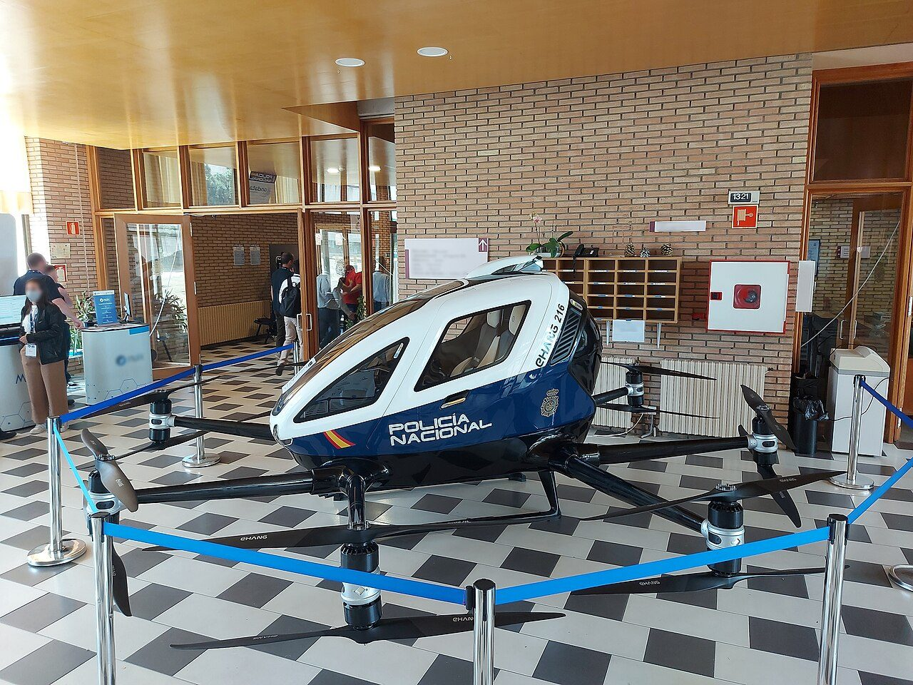
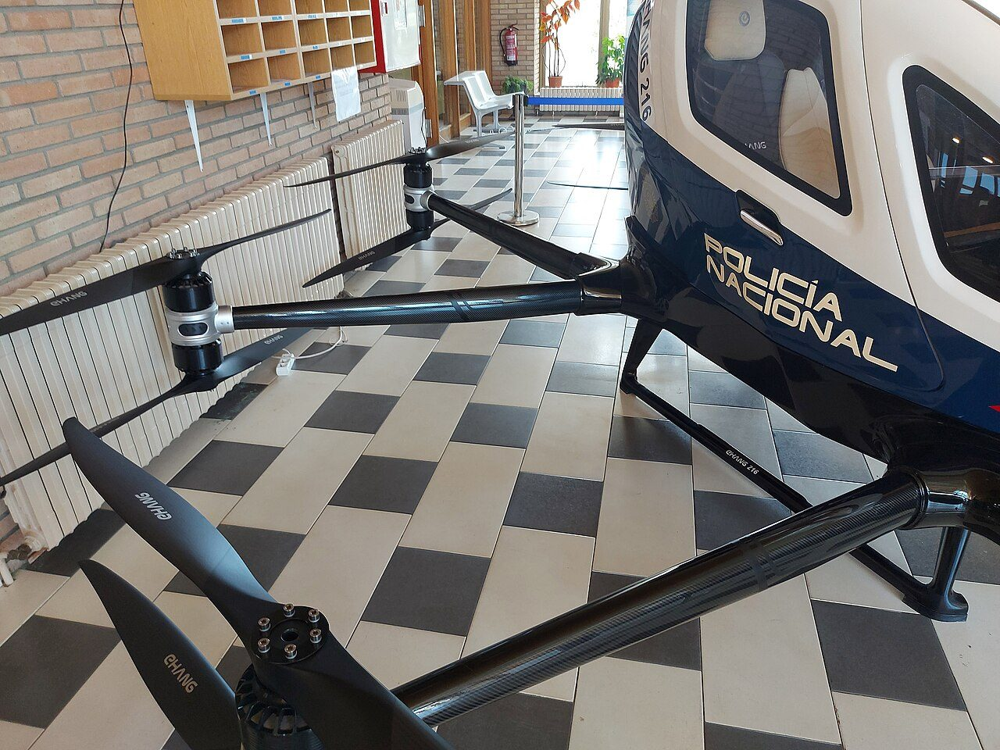
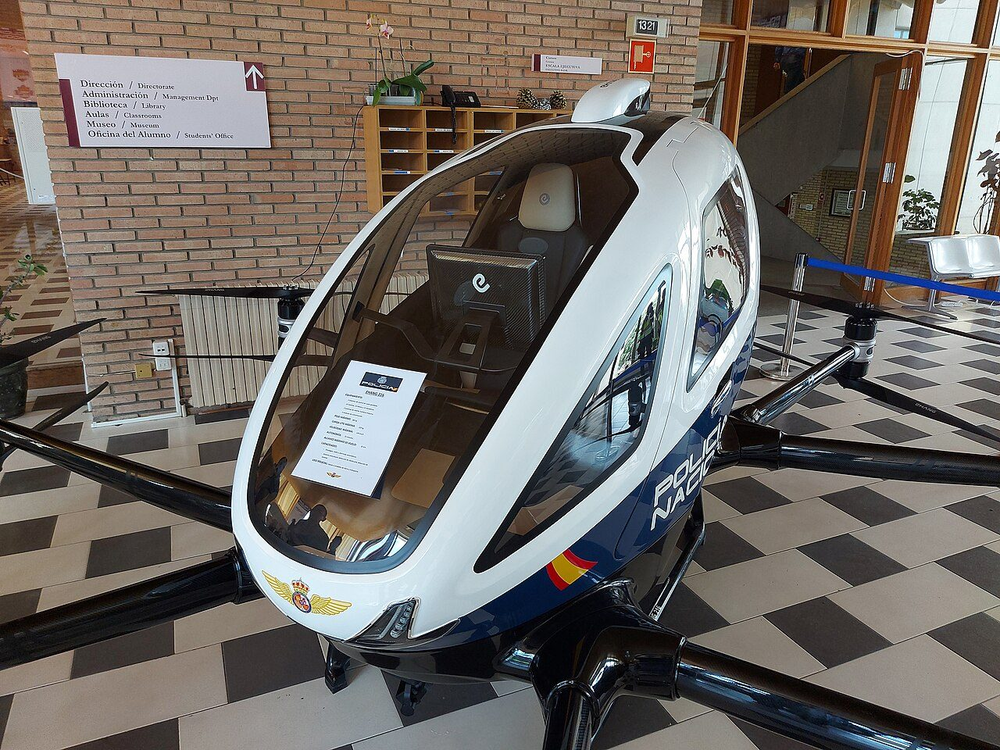
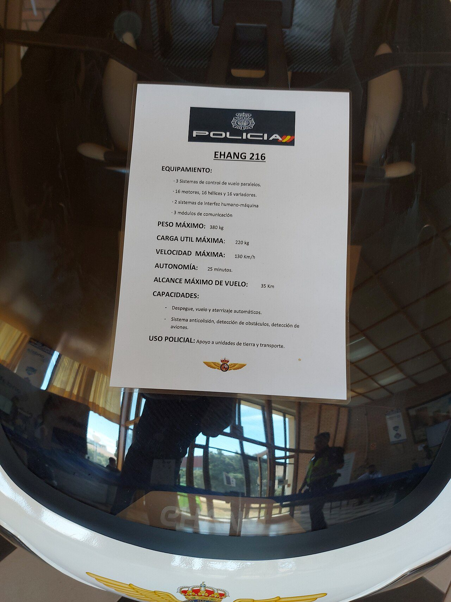
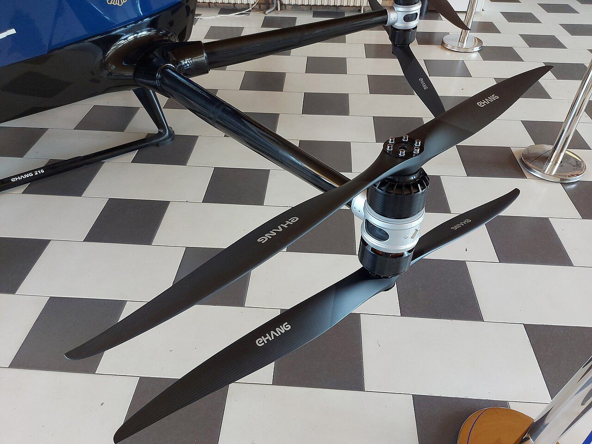

执行摘要Executive Summary
EH216-S 是目前全球唯一同时取得型号合格证（TC）、标准适航证（AC）、生产许可证（PC）与运营合格证（OC）的载人级无人驾驶 eVTOL。它既不是“能飞的汽车”，也不是只能表演的原型机，而是一个已经进入监管体系、可以卖票载客运行的产品。真正值得研究的问题因此从“能不能飞”变成了：在一个 620 kg、30 km 航程的物理框架里，它靠什么取证、能飞什么场景、以及这门生意的规模边界在哪里。
取证即能力证明
三年审定、40 000 余架次试飞、65 大项审查实验、450 余项正式符合性验证试验，最终以专用条件形式确立了“无人驾驶载人”这一新类别的最低安全要求。这是全球首次把“完全没有驾驶员”的载人飞行器纳入适航体系。
第一阶段是“受限的胜利”
TCDS 配套的第一阶段运行限制包括：目视范围内飞行、视距外增加观测员、暂不在水上运行。也就是说，“四证集齐”打开的是受控场景的商业化，不是城市通勤的全面放开。
已经形成真实收入
2024 年交付 216 架、营收 4.56 亿元（同比 +288.5%），首次实现全年非 GAAP 盈利；2025 年收入指引约 9 亿元。收入主要来自整机销售，而非载客运营票款。
核心矛盾：航程口径
官方航程 30 km、最大设计速度 130 km/h，但 2024 年固态电池搭载试飞把续航提升 90% 至 48 分钟以上。两个口径并不矛盾——30 km 是含裕度的取证值，48 分钟是技术潜力值。
研究设计与证据边界Research Design & Evidence Boundary
本文采用“证据分级 + 能力分层”的案例评估方法，而不是罗列宣传口径。研究对象限定为亿航智能 EH216-S 无人驾驶载人航空器系统及其运营主体，时间范围为 2020 年 12 月 TC 申请至 2026 年 11 月 20 日。
证据分级规则
| 等级 | 来源类型 | 能证明什么 | 不能证明什么 |
|---|---|---|---|
| A · 官方披露 | 亿航官网、公告、投资者材料 | 产品参数、取证节点、交付与营收数字 | 未公开的运行小时、事故率、可用率 |
| B · 监管文件 | 民航局专用条件、TC/AC/PC/OC、TCDS | 合法性、运行限制、审定的存在与范围 | 具体技术细节（以专用条件文本为准） |
| C · 权威报道 | 中国新闻网、证券时报、纳斯达克披露 | 交叉核验时间、金额、运营主体 | 技术性能的第一手数据 |
| D · 本文推算 | 基于公开数字的量级估算 | 数量级判断（单机均价、收入敏感性） | 精确财务或工程结论 |
本文不采用的论证方式
- 不用“低空经济万亿市场 × 市场份额”推导单款产品销量；
- 不把企业宣传视频当作性能证据；
- 不把“取得四证”直接等同于“大规模商业成功”；
- 不计算跨构型（多旋翼 / 复合翼 / 倾转旋翼）的统一性能均值。
课程框架对照：把 EH216-S 放回课程坐标系Mapping onto the Course Framework
本章不是复述课程内容，而是用课程给出的分析工具对 EH216-S 做定位。四个对照——产品形态、场景阶段、商业模式阶段、技术域——构成本文后续所有判断的坐标。
2.1 产品形态：它属于“纯飞式”，不是“飞行汽车”的狭义形态
课程对飞行汽车的定义是：面向空地一体交通的电动垂直起降飞行器，包含纯飞式、分体式、两栖式三种产品形态。按此定义：
| 形态 | 特征 | 代表 | EH216-S 是否属于 |
|---|---|---|---|
| 纯飞式 | 只会飞，不能上路；起降点固定 | EH216-S、EHang VT-35 | 是 |
| 分体式 | 飞行体 + 地面车体可分离组合 | 小鹏汇天「陆地航母」 | 否 |
| 两栖式 | 同一台车既能上路又能飞 | Alef Model A、PAL-V | 否 |
2.2 场景阶段：正处在“低空文旅先行”的第一阶段
课程把大众化应用分为四个阶段：低空文旅先行 → 枢纽接驳升级 → 区域交通突破 → 城市交通成网。EH216-S 的现状与第一阶段的定义高度吻合：
2.3 技术判据：用课程的“载荷≥100 kg、航程≥100 km”检验
课程明确提出规模化实用的门槛：载荷应 ≥100 kg、航程应 ≥100 km。EH216-S 的官方数据是 620 kg 起飞重量、30 km 航程——载荷满足（2 人约 150 kg），航程只有门槛的三成。
2.4 商业模式阶段：停在“产品服务耦合期”
课程把商业模式分为两阶段：产品服务耦合期（主机厂销售 + 政府示范 + 专业运营）→ 生态导向期（MaaS、订阅制、电池银行、补能站）。EH216-S 目前的结构：
| 课程给出的要素 | EH216-S 现状 | 判断 |
|---|---|---|
| G 端：政府示范项目验证 | 广州、合肥政府合作运营点 | 已具备 |
| B 端：整机销售 | 2024 年交付 216 架、收入 4.56 亿元 | 主要收入来源 |
| C 端：封闭式飞行体验 | 购票观光 | 已落地 |
| MaaS / 订阅制 | 无公开信息 | 未开始 |
| 电池银行 / 补能站 | 仅有快充能力，无网络化补能 | 未开始 |
结论很清楚：它赚钱靠“卖飞机”，还没进入“卖服务”。课程所说的“运营商核心营收 = 飞行时长/里程 × 单位费率”这条曲线，在 EH216-S 身上尚未开始。
取证与产品发展路径Certification & Development Path
EH216-S 最重要的产品特征不是构型，而是它走过的路：在一个没有现成适航标准的品类里，先造出标准，再造出产品。这条路径上的每个节点都可以查证，也因此比任何宣传语更有说服力。
审定历时
审定相关飞行
审查实验
正式符合性验证
产品定义与系统架构Product Definition & Architecture
基本参数（官方口径）
| 项目 | 数值 | 工程含义 |
|---|---|---|
| 最大起飞重量 | 620 kg | 含 2 名乘客（按 75 kg/人约 150 kg），结构 + 电池 + 动力占比高，属轻量多旋翼典型量级 |
| 最大航程 | 30 km | 取证值，含安全裕度；对应城市内点对点，而非城际 |
| 最大设计速度 | 130 km/h | 设计上限，商业运行速度通常更低 |
| 外形尺寸 | 1.93 × 5.73 m | 宽度即旋翼展开直径量级，决定起降场地净空要求 |
| 载客 | 2 人 | 无驾驶员座位，乘客即全部载荷 |
| 动力形式 | 纯电 · 共轴双桨 | 多旋翼构型，无倾转/复合翼，控制逻辑相对简单 |
| 驾驶方式 | 预设航线 + GNSS | 地面不操纵，飞行为点到点直飞 |



系统架构（据公开信息重构）

与“飞行汽车”概念的区分
严格地说，EH216-S 不是“飞行汽车”（roadable aircraft），而是载人级自动驾驶多旋翼航空器。它没有道路行驶能力，也不需要——这个取舍是清醒的：放弃道路兼容性，换来结构重量、适航路径与运行场景的简化。把它和“会飞的汽车”混为一谈，会掩盖其真正的工程约束：起降场地、空域许可，以及 30 km 的航程半径。
关键技术解剖Key Technologies

共轴双桨多旋翼
在相同机臂长度下提供更大桨盘面积，减小整机宽度（5.73 m），提高单位体积推力密度。代价是上下桨气动干扰、桨尖噪声与电机匹配难度上升——这是“用控制律换结构尺寸”的典型权衡。
多套飞控 + 投票机制
官方表述为“设多套飞控及投票机制，均配多传感器”，属硬件冗余 + 表决架构：单套失效时通过多数表决隔离故障源。关键问题是表决门限、共模失效防护与降级边界——公开资料未披露。
Fail-Safe 与就近降落
飞控内置 Fail-Safe，实时监测健康状态，判断“继续飞”还是“就近应急降落”。对无驾驶员平台，这是最重要的安全逻辑：决策必须由系统在预设规则内完成，并受地面调度监控。
双路通信与独立密钥
“通讯系统双重保障，每架配独立密钥并严加密数据”，针对链路劫持与指令注入。无人驾驶平台的攻击面比有人驾驶更大——没有飞行员意味着任何指令注入都可能直接改变飞行状态。
性能与物理边界Performance Envelope
30 km 与 48 分钟：两个口径为什么不矛盾
官方航程为 30 km，而 2024 年完成的固态电池搭载试飞把续航时间提升 90% 至 48 分钟以上。两个数字看似冲突，实则分属不同体系：
| 口径 | 数值 | 性质 | 用途 |
|---|---|---|---|
| 取证航程 | 30 km | TCDS 配套型号数据，含安全裕度、气象裕度与备降能量 | 运行手册、航线规划、适航符合性 |
| 技术续航 | 48 min+ | 固态电池搭载试飞的潜力值 | 技术验证、下一代产品 |
按 130 km/h 设计速度折算，48 分钟对应约 100 km 理论距离；但实际商业运行必须扣除爬升、悬停等待、备降余量、逆风与低温衰减，因此取证值取 30 km 是保守且合理的。这个差异本身说明：型号数据表上的数字是“承诺”，试飞数据是“能力”，两者不能混用。
点对点直飞
广州塔到白云机场直线约 30 km，属“刚刚够”的极限；实际运行更可能是 5–15 km 的观光环线。
日常通勤
通勤要求高频次、全天候、可预测。30 km 航程 + 起降场地约束 + 空域审批，无法承担日常通勤。
观光与体验
景区环线、城市地标观光对航程要求低、对体验溢价敏感，与产品能力高度匹配。
适航、运行限制与安全Airworthiness & Operating Limits
四证各管什么
| 证件 | 颁发 | 管什么 | 不管什么 |
|---|---|---|---|
| TC 型号合格证 | 2023-10 | 这个型号的设计满足专用条件 | 不等于每一架都能飞 |
| AC 标准适航证 | 2023-12 | 单架航空器处于适航状态 | 不等于可以商业载客 |
| PC 生产许可证 | 2024-03 | 生产线具备批量制造一致性能力 | 不等于产能已兑现 |
| OC 运营合格证 | 2025-03 | 运营人具备载人运行的组织与保障能力 | 不等于全场景放开 |
第一阶段运行限制：被忽略的关键约束
取证同时颁发的 TCDS 配套了第一阶段的运行限制条件，这是理解“能飞什么”的关键：
- 目视范围内运行：新开航线需观测，视距外区域增加额外观测员，以满足超视距要求；
- 暂时不在水上运行：与传统陆基起降航空器一致，观光航线中的湖泊、河面、海边等水域不作起降；
- 逐步放开：高海拔、超视距、无人值守等能力将按阶段释放，最终目标为城市内全无人化商业运营。
应用场景：专业化与大众化双线Scenarios: Professional & Mass-Market Tracks
课程把飞行汽车的应用分为两条并行的线：专业化应用（公共安全与行业效率，从刚需走向增值）与大众化应用（出行体验与交通补充，四阶段推进）。EH216-S 的 2 座、30 km、无驾驶员特征，决定了它在两条线上的位置完全不同。
8.1 大众化线：EH216-S 的唯一现实主战场
| 课程阶段 | 定义 | EH216-S 适配度 | 判断 |
|---|---|---|---|
| ① 低空文旅先行 | 观光体验切入，技术门槛低、政策包容 | ★★★★★ | 当前所在阶段，已在广州/合肥开票 |
| ② 枢纽接驳升级 | 连接机场、高铁站，分钟级立体接驳 | ★★★☆☆ | 航程可触及边缘，受起降点与空域限制 |
| ③ 区域交通突破 | 城市群城际飞行 | ★☆☆☆☆ | 30 km 不支持，需构型升级 |
| ④ 城市交通成网 | 规模化空中文通体系 | ☆☆☆☆☆ | 现构型不可能达成 |
8.2 专业化线：有潜力，但不是这台机器的主业
| 课程序列 | 场景 | EH216-S 适配 | 原因 |
|---|---|---|---|
| 刚需 | 紧急医疗 | 低 | 需改装舱内设备、夜间与全天候能力，2 座载荷有限 |
| 消防救援 | 低 | 亿航另有 EH216-F 消防型号，载人版不承担此任务 | |
| 特殊物流 | 低 | 载人构型效率低，亿航另有 EH216-L 物流型号 | |
| 农林植保 | 无 | 非本产品任务域 | |
| 增值 | 空中游览 | 高 | 与文旅阶段直接对应 |
| 城市地标体验 | 较高 | 需城市空域与起降点配套 |
市场可行性Market Feasibility
已经发生的收入
| 指标 | 2023 | 2024 | 变化 |
|---|---|---|---|
| EH216 系列交付 | 52 架 | 216 架 | +315% |
| 全年总收入 | 约 1.17 亿元 | 4.56 亿元 | +288.5% |
| 经营亏损 | — | 2.53 亿元 | 同比缩窄 14.5% |
| 非 GAAP 调整后利润 | -1.39 亿元 | +4 310 万元 | 首次全年转正 |
商业模式与产业链定位（课程框架）
课程把产业链分为上游（材料与关键部件）、中游（整机制造）、下游（营运应用与保障），并给出一个判断：中游强、上下游弱。EH216-S 的位置正好落在这个判断的强项上。
材料与关键系统
电池、电机、电控有积累；飞控软件、航电、操作系统仍是短板；碳纤维复材成本高。EH216-S 的共轴双桨与飞控为自研，但供应链整体受制于上游。
整机制造与适航验证
EH216-S 的核心优势所在：全球唯一走完 TC/AC/PC/OC 全流程，云浮二期目标年产能 1 000 架。这正是“中游强”的实证。
运营、基建与监管
OC 已由两家运营人取得，但起降点、补能站、空域审批仍是逐点落地的“许可供给”，构成增长的真实上限。
按课程的两阶段模型，EH216-S 仍处于产品服务耦合期：收入=销量×单价，而非运营里程×费率。要进入生态导向期（MaaS、订阅、电池银行），前提是补能网络与起降点密度先到位——这不是一家整机厂能单独完成的。
产能与订单
- 产能：云浮生产基地二期扩建，目标 2025 年总年产能 1 000 架；另有合肥、威海、北京基地建设意向；
- 国内客户：威海高区、祥源文旅等；交付至上海、威海、温州、韶关、武汉等城市；
- 海外足迹：日本、泰国、墨西哥；西班牙完成欧洲首个无人驾驶 eVTOL 城市环境飞行；
- 产业合作：与英搏尔开发新一代电机与电控，与长安汽车合作面向大众市场的飞行汽车产品。
收入敏感性（教学模型）
| 情境 | 年交付量 | 单机均价假设 | 年收入量级 | 成立条件 |
|---|---|---|---|---|
| 保守 | 300 架 | 180 万元 | 5.4 亿元 | 观光场景缓慢铺开，OC 运营点增长有限 |
| 基准 | 600 架 | 200 万元 | 12 亿元 | 更多城市获得航线与起降点许可 |
| 积极 | 1 000 架 | 220 万元 | 22 亿元 | 产能满产 + 海外订单放量 + 运营票款形成第二曲线 |
竞品横向比较Competitive Landscape
| 维度 | 亿航 EH216-S | Joby S4 / Archer | 小鹏汇天 |
|---|---|---|---|
| 产品逻辑 | 多旋翼观光平台 | 城市空中出租车 | 车机一体的消费级飞行汽车 |
| 核心优势 | 取证最快、已有 OC 运营 | 性能（航程/速度）与适航体系成熟度 | 渠道与品牌、量产能力 |
| 核心短板 | 航程短、速度低、场景窄 | 取证周期长、基础设施空白 | 双重监管（道路+航空）、重量与航程矛盾 |
| 商业化阶段 | 已开票运营（广州/合肥） | 认证与试运营准备 | 示范与预售 |
| 对本文的启示 | “先合规、后性能”路线 | “高性能、慢合规”路线 | “产品形态创新、监管最难”路线 |
三条路线的本质差异是对“时间”的定价不同：亿航用性能换时间，Joby/Archer 用时间换性能，小鹏汇天用形态换市场注意力。没有绝对正确的路线，但有明确的取舍——这也是本案例对工程决策最有价值的部分。
工程化 Go / No-Go 门槛Go / No-Go Gates
运行数据公开
公开累计运行小时、架次、可用率、事件率。没有运行数据的“安全”只是设计意图。
场景扩围取证
超视距、夜间、水上、复杂气象的逐项放开，需要对应的专用条件增补与验证证据。
单机经济性
票价 × 年载客量能否覆盖折旧、电池更换、维护、保险与场地分成。这是商业模式的生死线。
网络化运营
从“单点观光”到“多点接驳”，需要空域协同、起降点标准与调度系统的规模化验证。
局限与未决问题Limitations
- 运行绩效未公开：累计飞行小时、事故率、签派可靠率、单机年利用率均缺失，无法评估长期安全性；
- 航程口径差异：30 km 与 48 分钟分属取证值与技术潜力值，公开材料未给出完整能量—载荷—气象包线；
- 专用条件的国际互认：中国专用条件尚未与 FAA/EASA 体系互认，海外运营需逐国审定；
- 单机经济性不明：票价、载客率、维护成本未披露，无法验证观光商业模式的盈亏平衡点；
- 运营高度依赖地方配套：空域、起降点、消防与地方监管的落地速度，决定收入增长的真实上限。
这些不是“唱衰”，而是把结论限定在证据能支撑的范围内。一门生意可以很性感，但研究必须可审计。
结论：三支柱视角下的 EH216-SConclusion: Three-Pillar Assessment
课程把飞行汽车的成熟度拆成三根支柱：技术供给力、市场牵引力、环境适配力。用这三根支柱给 EH216-S 打分，结论比单看“全球首个四证”要清醒得多。
| 支柱 | 课程内涵 | EH216-S 表现 | 评级 |
|---|---|---|---|
| 技术供给力 | 构型总体、动力推进、安全飞行、智能驾驶、智慧管控 | 构型与飞控冗余成熟、取证验证充分；但航程 30 km 未达 100 km 实用门槛，动力路线停留在纯电短途 | 中上 |
| 市场牵引力 | 场景与商业模式决定价值与空间 | 文旅场景已开票、整机销售成规模；但盈利仍靠卖飞机，运营票款未成第二曲线 | 中 |
| 环境适配力 | 基础设施、法规标准、空域与监管 | 四证打通制度路径（领先全球）；但起降点、补能、空域审批仍需逐点落地 | 中上 |
可复用的方法论
- 先定位形态：纯飞 / 分体 / 两栖，决定监管路径与取证难度；
- 再定位阶段：文旅 → 枢纽 → 区域 → 成网，避免用第四阶段的想象评价第一阶段的产品；
- 用课程判据量化：载荷 ≥100 kg、航程 ≥100 km，一句话就能判定产品处在“实用”还是“体验”区间；
- 看商业模式阶段：卖产品还是卖服务，决定了收入曲线是线性的还是网络的；
- 诚实留白：没有证据的部分——运行小时、事故率、单机经济性——就写“没有证据”。
EH216-S 的意义，不是让“飞行汽车”离生活更近了一步，而是证明了一条此前不存在的合规路径是可以走通的：在没有标准的地方造出标准，在没人做过的品类里拿到四张证，并把飞机真正卖出去、把乘客真正送上天。
但用课程的尺子量，它是一台“取证领先、航程落后、场景单一”的第一阶段产品：30 km 航程只达实用门槛的三成，商业模式停在卖飞机，运营半径限于文旅。这不是贬低，而是把它放回正确的位置——它不是城市交通的解，而是低空文旅的第一个可运营样本。真正决定行业天花板的，仍是课程所说的三根支柱能否同时长起来。
影像资料Photo & Video Evidence
静态照片用于辨认构型与结构细节，动态影像用于观察起降、舱内与运营现场。以下视频为外部链接/嵌入，版权归原作者，仅作课程引用。
14.1 官方演示与取证影像
14.2 站内播放（B 站嵌入）
若视频无法播放（区域限制或原稿删除），请使用上方的官方链接。本页不镜像任何视频文件，仅嵌入外部播放器。
14.3 图片来源与许可
| 文件 | 内容 | 作者 | 许可 |
|---|---|---|---|
| general.jpg | EHang 216 整机（西班牙国家警察涂装） | David Perez | CC0（公有领域） |
| side.jpg | 机臂与桨盘侧视 | David Perez | CC0 |
| rotors.jpg | 共轴双桨与碳纤维机臂特写 | David Perez | CC0 |
| front.jpg | 前视（座舱与滑橇） | David Perez | CC0 |
| spec.jpg | 产品参数牌 | David Perez | CC0 |
参考文献References · GB/T 7714—2015
- 亿航智能. EH216-S 无人驾驶载人航空器产品页[EB/OL]. [2026-11-20]. https://www.ehang.com/cn/ehang216s/.
- 亿航智能. EH216-S 适航取证专题页（审定历程与运行限制）[EB/OL]. [2026-11-20]. https://www.ehang.com/cn/ehang216s/airworthiness/.
- 中国新闻网. 全国首批载人类民用无人驾驶航空器运营合格证颁发[EB/OL]. 2025-03-30[2026-11-20]. https://www.chinanews.com.cn/cj/2025/03-30/10391660.shtml.
- 证券时报. 亿航智能去年 eVTOL 交付量增超三倍 今年收入或翻倍增长[EB/OL]. 2025-03-12[2026-11-20]. https://stcn.com/article/detail/1579255.html.
- 亿航智能. 亿航智能持续推进 EH216-S 无人驾驶载人航空器系统运行和商业运营[EB/OL]. 2023-10-30[2026-11-20]. https://www.ehang.com/news/1010.html.
- 中国民用航空局. EH216-S 型无人驾驶航空器系统专用条件[S]. 2022.
- 中国民用航空局. 民用无人驾驶航空器运行安全管理规定（CCAR-92 部）[S]. 2024.
- 亿航智能. EH216-S 系列科普和解读（1）——OC 解读[EB/OL]. [2026-11-20]. https://www.ehang.com/cn/news/1197.html.
- JOBY AVIATION. Aircraft and Technology[EB/OL]. [2026-11-20]. https://www.jobyaviation.com/technology.
- 张玉新. 飞行汽车技术基础：第四章 飞行汽车的现状及展望[Z]. 吉林大学自动驾驶安全联合实验室, 2026.
- 张玉新. 飞行汽车技术基础：第五章 飞行汽车产业分析及支撑技术[Z]. 吉林大学自动驾驶安全联合实验室, 2026.
- 中国汽车工程学会. 飞行汽车发展报告2.0：迈向空地一体交通新时代[R]. 2026.
- 张扬军, 等. 飞行汽车的研究发展与关键技术[J]. 汽车安全与节能学报.
- ARCHER AVIATION. Midnight[EB/OL]. [2026-11-20]. https://www.archer.com/midnight.
说明：本文所引参数与节点以官方页面与监管/权威媒体报道为准；推算部分（单机均价、收入敏感性）已在正文标注为“本文推算”，不构成公司预测或投资建议。